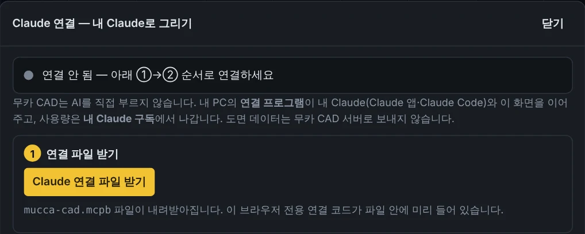

무카 CAD 에 내 Claude 연결하기 — 그림 안내
2026-10-28 · 무카 CAD 상단 [Claude 연결] 창의 ①→②→③ 순서를 그림으로 풀었습니다.
무카 CAD 는 AI 를 직접 부르지 않습니다. 내 PC 에 설치하는 연결 프로그램이 내 Claude(Claude 앱)와 무카 CAD 화면을 이어 주고, 사용량은 내 Claude 구독에서 나갑니다. 준비물: Windows·Mac 용 Claude 데스크톱 앱(claude.ai/download)과 로그인.
1연결 파일 받기
무카 CAD 오른쪽 위 [Claude 연결](테스트 서버는 [AI 연결]) 버튼을 누릅니다.
열린 창에서 노란 [Claude 연결 파일 받기]를 누르면 mucca-cad.mcpb 파일이 다운로드 폴더에 받아집니다.

⚠ 파일을 받은 무카 CAD 창은 닫지 말고 그대로 두세요. 이 창이 설치가 끝나기를 기다렸다가 자동으로 연결합니다.
2Claude 앱에 설치 — 둘 중 편한 방법 하나
방법 A · 받은 파일을 더블클릭 (가장 쉬움)
다운로드 폴더에서 mucca-cad.mcpb 를 더블클릭하면 Claude 앱이 열리면서 설치 창이 뜹니다. [설치]를 누르면 끝입니다.
무카 CAD (mucca-cad) — 무카 CAD 화면에 도면을 그리는 도구
그림은 이해를 돕는 예시입니다. Claude 앱 버전에 따라 문구·위치가 조금 다를 수 있습니다.
방법 B · Claude 앱 설정에서 설치 (더블클릭이 안 될 때)
- Claude 앱 왼쪽 아래 내 이름(프로필)을 누르고 설정을 엽니다.
- 왼쪽 목록에서 확장 프로그램을 고릅니다. 새 버전은 데스크톱 앱 › 확장 프로그램 옆 [관리] 입니다.
- 고급 설정을 누릅니다.
mucca-cad.mcpb파일을 이 화면에 끌어다 놓거나, [확장 프로그램 설치…]를 눌러 다운로드 폴더의 파일을 고릅니다.- 설치 창이 뜨면 [설치].
(새 버전: 데스크톱 앱)
그림은 이해를 돕는 예시입니다. 메뉴 이름은 Claude 공식 안내(설정 › 확장 프로그램 › 고급 설정 › 확장 프로그램 설치)를 따랐습니다.
설치하면 확장 프로그램 목록에 무카 CAD가 보입니다. 꺼져 있으면 켜 주세요. 메뉴가 안 보이면 Claude 앱을 최신으로 업데이트한 뒤 다시 해 보세요.
3자동 연결 확인
설치가 끝나면 (닫지 않고 둔) 무카 CAD 화면이 저절로 연결되고, 창 위쪽 불이 초록색으로 바뀝니다.
그다음 Claude 앱 대화에서 "무카 CAD에 플랜지 그려줘"처럼 말하면 무카 CAD 화면에 그려집니다.
잘 안 될 때
- 몇 분이 지나도 회색 불 — Claude 앱을 완전히 껐다 켭니다(Windows 작업 표시줄 오른쪽 아래 아이콘에서도 종료). 그래도 안 되면 무카 CAD 연결 창의 「자동 연결이 안 될 때」를 펼쳐 Claude 앱에 "무카 연결 코드 알려줘"라고 물어 나온 6자리를 넣으세요.
- 다른 PC·다른 브라우저로 바꾸면 그 PC 에서 1~2번을 한 번 더 합니다.
- "예전 버전" 안내가 나오면 [새 연결 파일 받기]로 받은 파일을 2번처럼 다시 설치합니다.
그래도 막히면 문의 게시판에 화면 캡처와 함께 남겨 주세요.
참고: Claude 공식 도움말 「Getting started with local MCP servers on Claude Desktop」(support.claude.com).